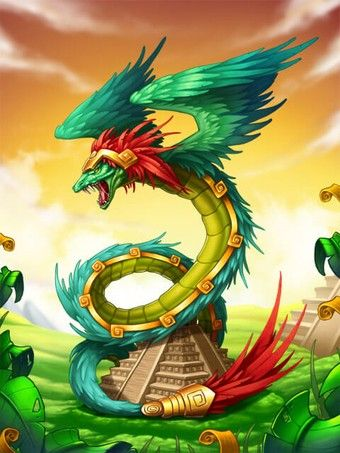

Dragão Americano

Os dragões aparecem raramente nos mitos dos nativos americanos, mas existem registros históricos da crença em criaturas “draconídeas”. Um dos principais deuses das civilizações do golfo do México era Quetzalcoatl, o deus asteca do vento, do ar e do aprendizado, é a pedra angular de toda a bondade do dragão. Seu nome é a combinação de duas palavras nauátles: quetzal ( nome dado a um pássaro de plumagem esmeralda) e coatl que significa serpente. Por isso ele e comumente chamado de “serpente Emplumada”. Sua presença se origina de lendas sul-americanas, que o retratam com poder inigualável.